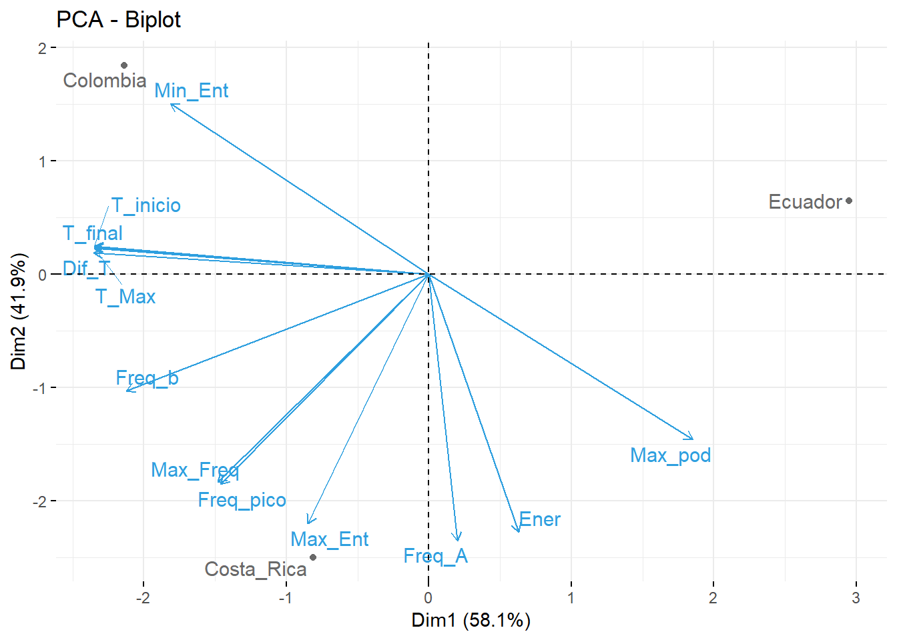
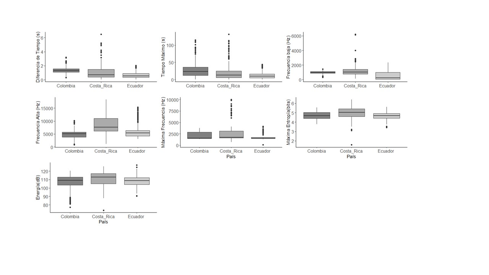

Una matriz de correlación permite conocer cuáles variables están correlacionadas, así podemos elegir métricas que difieran entre sí para tener un mejor análisis de la bioacústica.
matriz_correlacion<-cor(tucan[,-c(1,2)],method = "spearman")
matriz_correlacion## T_Ini T_Fin Dif_T Freq_B Freq_A
## T_Ini 1.00000000 0.99852645 0.41426765 0.09648489 -0.02777231
## T_Fin 0.99852645 1.00000000 0.45108957 0.10232916 -0.02935082
## Dif_T 0.41426765 0.45108957 1.00000000 0.04304640 0.02736105
## Freq_B 0.09648489 0.10232916 0.04304640 1.00000000 0.07855917
## Freq_A -0.02777231 -0.02935082 0.02736105 0.07855917 1.00000000
## T_Max 0.99940592 0.99869769 0.42274435 0.09806716 -0.02707567
## Ener 0.01376635 0.02578126 0.19347654 0.02749869 0.33017032
## Max_Ent 0.07018793 0.07730664 0.18505304 0.07238629 0.45781945
## Max_Freq -0.07906201 -0.07599274 0.03573312 0.17455464 0.53137445
## Max_poder -0.08509733 -0.08165765 0.01830288 -0.03724844 0.28919689
## Min_Entropia -0.12189410 -0.12876846 -0.10551964 -0.01829372 0.24487292
## Frecuenca_pico -0.08303179 -0.07986079 0.03251866 0.16944536 0.52968671
## T_Max Ener Max_Ent Max_Freq Max_poder
## T_Ini 0.99940592 0.01376635 0.07018793 -0.07906201 -0.08509733
## T_Fin 0.99869769 0.02578126 0.07730664 -0.07599274 -0.08165765
## Dif_T 0.42274435 0.19347654 0.18505304 0.03573312 0.01830288
## Freq_B 0.09806716 0.02749869 0.07238629 0.17455464 -0.03724844
## Freq_A -0.02707567 0.33017032 0.45781945 0.53137445 0.28919689
## T_Max 1.00000000 0.01922707 0.06989268 -0.07936235 -0.08237125
## Ener 0.01922707 1.00000000 0.05583338 0.26400364 0.93107559
## Max_Ent 0.06989268 0.05583338 1.00000000 0.31064956 -0.02198312
## Max_Freq -0.07936235 0.26400364 0.31064956 1.00000000 0.20356239
## Max_poder -0.08237125 0.93107559 -0.02198312 0.20356239 1.00000000
## Min_Entropia -0.12452185 -0.19621538 0.31991052 0.24639628 -0.24307601
## Frecuenca_pico -0.08332394 0.26081741 0.30935539 0.99292973 0.20297818
## Min_Entropia Frecuenca_pico
## T_Ini -0.12189410 -0.08303179
## T_Fin -0.12876846 -0.07986079
## Dif_T -0.10551964 0.03251866
## Freq_B -0.01829372 0.16944536
## Freq_A 0.24487292 0.52968671
## T_Max -0.12452185 -0.08332394
## Ener -0.19621538 0.26081741
## Max_Ent 0.31991052 0.30935539
## Max_Freq 0.24639628 0.99292973
## Max_poder -0.24307601 0.20297818
## Min_Entropia 1.00000000 0.24693041
## Frecuenca_pico 0.24693041 1.00000000El análisis de componentes principales (PCA) relaciona las métricas de bioacústica entre sí, por medio de autovalores, y permite conocer las relaciones lineales y la línea de mejor ajuste para todos los datos. Figura 6
fviz_pca_biplot(res.pca, repel = TRUE,
col.var = "#2E9FDF", # Variables color
col.ind = "#696969" # Individuals color
) Figura 7.Este resultado del PCA permite determinar que las métricas de Bioacústica de Ecuador son diferentes a las obtenidas en Colombia y Costa Rica. Además,en Costa Rica están los valores más altos de Máxima Entropía y en Colombia los de mínima entropía.
Diferencias de bioacústica entre países
modelo1 <- lm(Dif_T~Pais,data=tucan)
m1 <- anova(modelo1)
modelo2 <- lm(T_Max~Pais,data=tucan)
m2 <- anova(modelo2)
modelo3 <- lm(Freq_B~Pais,data=tucan)
m3 <- anova(modelo3)
modelo4 <- lm(Freq_A~Pais,data=tucan)
m4 <- anova(modelo4)
modelo5 <- lm(Max_Freq~Pais,data=tucan)
m5 <- anova(modelo5)
modelo6 <- lm(Max_Ent~Pais,data=tucan)
m6 <- anova(modelo6)
modelo7 <- lm(Ener~Pais,data=tucan)
m7 <- anova(modelo7)Cuadro_relaciones## Variables F_value P_value
## 1 Dif_T~Pais 98.87827 3.275921e-40
## 2 T_Max~Pais 65.02880 2.039845e-27
## 3 Freq_b~Pais 152.11852 4.849718e-59
## 4 Freq_A~Pais 181.21380 9.798235e-69
## 5 Max_Freq~Pais 36.60018 4.094102e-16
## 6 Max_Ent~Pais 55.99557 6.970444e-24
## 7 Ener~Pais 18.22439 1.635980e-08 Figura 7
Los cantos suelen ser vocalizaciones más complejas y se desarrollan para defender un territorio y atraer a la pareja durante la época reproductiva (Mendes; Colino-Rabanal & Peris, 2011).
La vocalización de los cantos está asociada con la reproducción y a la vez con la duración del día, la testosterona de los machos de muchas especies aumentan según lo largo que sean los días y por lo tanto aumentan los cantos, este comportamiento resulta más evidente en primavera y verano en lugares templados; en las zonas tropicales que no tienen estaciones tan marcadas, permite que la época reproductiva sea más larga y que se reproduzcan cantos durante casi todo el año, además en el trópico no sólo los machos cantan como suele ser en los lugares templados, sino que también es común que las hembras de varias especies lo hagan (Gordillo, Ortiz & Navarro; 2013).
La bioacústica es la ciencia donde coincide la biología y la acústica para estudiar la producción del sonido biológico de una forma no invasiva para los individuos de estudio, en el proceso de esta área de estudio se integran otras ciencias como, taxonomía, sistemática, ecología del paisaje sonoro, computación y electrónica (Pedroza, De la Rosa & Rosas; 2016).Para este estudio de caso se realizaron análisis de bioacústica de canto de la especie Ramphastos ambiguus de tres países Ecuador, Colombia y Costa Rica. Las diferencias en los parámetros del canto en relación con los tres países se analizaron por medio de un ANOVA. El coeficiente de correlación de Spearman se empleó para determinar las correlaciones entre las métricas utilizadas. El nivel de significación fue de 0.05. Los análisis estadísticos se realizaron con el programa Rstudio.
Las siguientes métricas se encuentran altamente correlacionadas entre sí; métrica de tiempo de inicio con tiempo final (Rho de Spearman= 1), tiempo de inicio con tiempo máximo (Rho de Spearman= 1), tiempo final con tiempo máximo (Rho de Spearman= 1), energía con máximo poder (Rho de Spearman= 0,93) y pico de frecuencia con máxima frecuencia (Rho de Spearman= 0,99) (Fig. 1). Cabe recalcar que la correlación no implica causalidad, sino asociación (Chaves, 2011).
Se observa una tendencia decreciente en las siguientes métricas con respecto a los cantos de Ecuador en comparación con Colombia y Costa Rica: máxima frecuencia, tiempo máximo y diferencia de tiempo.
Estas diferencias significativas se pueden deber a un indicio de adaptación a condiciones ambientales de cada zona, ya que se ha demostrado en algunos estudios que algunas especies varían sus parámetros de canto a lo largo de los diferentes entornos acústicos en los que se encuentren (Mendes; et al, 2011).
El hábitat suele influir en el sonido emitido por las aves en este caso los cantos, hay estudios que reflejan que, en lugares con vegetación densa y compleja, así como bosques o selvas las frecuencias a las que se reproducen las vocalizaciones son más bajas en comparación con lugares que tienen vegetación menos densa, así como pastizales (Gordillo, Ortiz & Navarro; 2013).
Para poder determinar con exactitud a que se debe la diferencia tan significativa entre los resultados entre Ecuador y Costa Rica-Colombia,se debe hacer una busqueda más exhaustiva sobre los lugares en donde se tomarón los datospara poder confirmar o descartar si la densidad vegetal es la responsable de la diferencia de resultados.
Referencias bibliográficas
Charif, RA, AM Waack, and LM Strickman. 2010. Raven Pro 1.4 User’s Manual. Cornell Lab of Ornithology, Ithaca, NY
Ecobiosis. (s.f.). Ficha especie: Ramphastos ambiguus Swainson. Recuperado de: http://ecobiosis.museocostarica.go.cr/especies/ficha/2/4387 el 5 de marzo, 2019.
Stiles, F. G., & Skutch, A. F. (2007). Guía de aves de Costa Rica. Editorial INBio.
Gordillo, A., Ortiz, M & Navarro, A. (2013). Estructura y evolución de las vocalizaciones de las aves. Revista Ciencias, 32-40pp
Chaves, A. (2011). Diseño Experimental para Agrociencias. EUNED., San José, Costa Rica.
Mendes, S.; Colino-Rabanal, V. J. &Peris, S. J. (2011). Diferencias en el canto de la Ratona Común (Troglodytes musculus) en ambientes con distintos niveles de influencia humana. Hornero 026 (02): 085-093
Pedroza, A; De la Rosa, J & Rosas, R. (2016). Escuchando a la naturaleza: Del reconocimiento de voz a la bioacústica. Pistas Educativas (120): 1039-1056